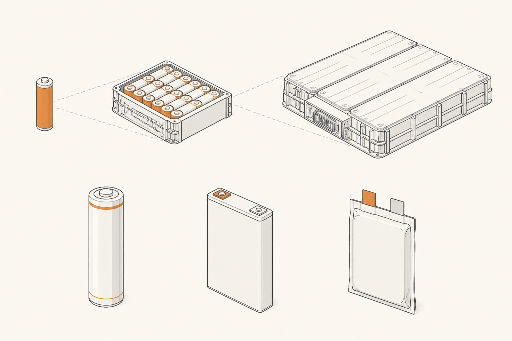

La batería por dentro
La palabra "batería" se usa con tanta soltura que parece designar una sola cosa, como si bajo el coche hubiera un único bloque mágico de almacenamiento. La realidad es bastante más interesante: una batería de coche eléctrico es un sistema con tres niveles de profundidad, hecho con miles de unidades pequeñas que vienen en tres formatos muy distintos. Esta píldora abre la caja.
Tres niveles, una sola palabra
Cuando alguien dice "la batería del coche pesa 500 kg", está hablando del nivel más alto: el pack. Cuando alguien dice "una celda dura 3 000 ciclos", está hablando del nivel más bajo: la celda. Y entre ambos hay un nivel intermedio: el módulo. Una batería de coche eléctrico es siempre la misma jerarquía: muchas celdas se agrupan en módulos, y varios módulos se ensamblan en un pack.
La celda es la unidad indivisible. Es el bloque de construcción químico básico: dos electrodos (cátodo y ánodo), un líquido que los conecta (electrolito), una membrana que los separa, y un envoltorio. Una celda sola entrega entre 3 y 4 voltios y, según su tamaño, puede almacenar entre 5 y 100 vatios-hora. Para hacerte una idea: una celda de coche eléctrico típica almacena más o menos lo mismo que una pila de mando a distancia gigante.
El módulo es un grupo de celdas dentro de una carcasa rígida. Se conectan entre sí (algunas en serie para sumar voltaje, otras en paralelo para sumar capacidad) y comparten una placa de gestión que vigila las celdas que tiene dentro. Un módulo es lo que un técnico puede sustituir si una celda interior falla — siempre que el coche esté diseñado para eso.
El pack es el conjunto completo. Reúne varios módulos dentro de una caja metálica plana, con conexiones internas, un sistema térmico que recorre todo el bloque, y un cerebro electrónico (el BMS, próxima píldora) que vigila el conjunto. Es lo que ves al levantar un coche eléctrico: una bandeja del tamaño del piso entero del vehículo.

Por qué tantos niveles
Podría parecer un capricho de ingeniero. ¿No sería más simple meter celdas sueltas directamente en un pack, sin la capa intermedia de los módulos? Tres razones para mantener la jerarquía:
Mantenimiento. Si una celda falla en un pack de 4 000 celdas sueltas, hay que vaciar el pack entero. Si esa celda está dentro de un módulo de 100, basta con cambiar el módulo. Es como cambiar un eslabón de cadena en lugar de hacer una cadena nueva.
Seguridad. Si una celda entra en fuga térmica (se calienta sin control), el módulo la encierra y limita la propagación al resto. Sin módulos, un solo problema podría arrasar el pack entero.
Fabricación. Es más fácil ensamblar y testear módulos pequeños en una línea industrial y luego unirlos, que montar miles de celdas directamente en una bandeja gigante.
Hay una excepción interesante: algunos diseños recientes saltan el nivel intermedio y van directos de celda a pack ("cell-to-pack" o "cell-to-chassis"). Ahorra peso y espacio, pero complica las tres cosas anteriores. Es una compensación, no una mejora pura — y la profundizamos en la píldora 11 cuando hablemos de baterías estructurales.
Los tres formatos de celda
Una celda puede tener tres formas físicas distintas. Cambia bastante por dentro y mucho por fuera, pero todas hacen lo mismo: almacenar energía electroquímica.
Cilíndrica. Forma de pila gigante. La estructura interna es un "rollito" de capas que se enrolla como un sushi y se mete en un tubo metálico. Las dos cifras famosas son las cilíndricas tipo "18650" (18 mm de diámetro, 65 mm de alto), las "21700" y las más recientes "4680". Ventaja: son baratas, robustas y muy probadas. Inconveniente: empaquetar miles de cilindros en una bandeja plana deja huecos vacíos entre ellos.
Prismática. Forma de ladrillo rectangular metálico. Mismo principio interno (capas) pero plegadas o apiladas en lugar de enrolladas. Ventaja: aprovechan mejor el espacio, son robustas y fáciles de gestionar térmicamente. Inconveniente: si una celda se hincha (cosa que pasa con el envejecimiento), no tiene mucho sitio para deformarse y eso puede comprometer al módulo entero.
Pouch (bolsa). Forma de "sobre" flexible: las capas internas se meten en una bolsa de aluminio laminado, sellada al vacío. Ventaja: muy ligera, muy delgada, formas variables. Inconveniente: necesita una estructura externa que la sujete bien (las bolsas no se aguantan solas) y es más sensible a daños mecánicos.
Las cifras importantes
Tres números describen casi todo lo que necesitas saber sobre un pack de baterías:
Capacidad, en kWh. Cuánta energía cabe. Los packs típicos hoy van desde unos 40 kWh (urbanos pequeños) hasta unos 100 kWh (turismos grandes y SUV), con casos extremos por encima de 150 kWh.
Voltaje nominal, en V. La "presión" eléctrica del pack. Casi todos hoy están entre 350 y 450 V (la familia "400 V"). Algunos modernos están en torno a 800 V (lo veremos en la píldora 10).
Densidad energética, en Wh/kg. Cuánta energía cabe por cada kilo de batería. Hoy un pack completo está entre 150 y 200 Wh/kg. Una celda aislada puede llegar a 250 o 300 Wh/kg, pero al sumar las carcasas, el cableado y la estructura del pack, se baja al rango anterior.
Esa densidad es la cifra que define el problema central del coche eléctrico: cuanta más necesitas, más pesa y más cuesta. Y por eso la batalla industrial está toda en mejorarla, sin sacrificar durabilidad ni seguridad. Lo veremos con detalle en las píldoras de químicas.
FácilOrdena de menor a mayor: módulo, pack, celda.
Celda → módulo → pack. La celda es la unidad mínima electroquímica. Un grupo de celdas forma un módulo. Un grupo de módulos forma un pack. Cada nivel añade carcasa, conexiones y gestión.
FácilSi una celda interior falla, ¿qué se sustituye normalmente?
El módulo completo, no la celda suelta. Por eso existe la capa intermedia: para que una avería localizada no obligue a tirar el pack entero. (En diseños "cell-to-pack" sin módulos esta facilidad se pierde.)
Medio¿Por qué la densidad energética del pack es menor que la de una celda aislada?
Porque al pasar de la celda al pack hay que añadir varias cosas que también pesan pero no almacenan energía: las carcasas de los módulos, el cableado, la caja del pack, los sensores, los conectores y el sistema térmico. Toda esa estructura "muerta" baja el ratio Wh/kg del conjunto. Una celda puede ir a 280 Wh/kg, pero el pack acaba en 170-200 Wh/kg.
DifícilTienes una celda de 3,7 V y 5 Ah. Si quieres construir un pack de 400 V y 75 kWh aproximadamente, ¿cuántas celdas necesitas, mínimo?
Cada celda almacena 3,7 V × 5 Ah = 18,5 Wh. Un pack de 75 kWh = 75 000 Wh. Por tanto necesitas 75 000 ÷ 18,5 ≈ 4 054 celdas. Para llegar a 400 V conectarías unas 108 celdas en serie (400 ÷ 3,7 ≈ 108) y haces que esas series se repitan unas 38 veces en paralelo (38 × 108 ≈ 4 100 celdas, dando ~75 kWh). Es la cuenta básica detrás de cualquier pack cilíndrico.